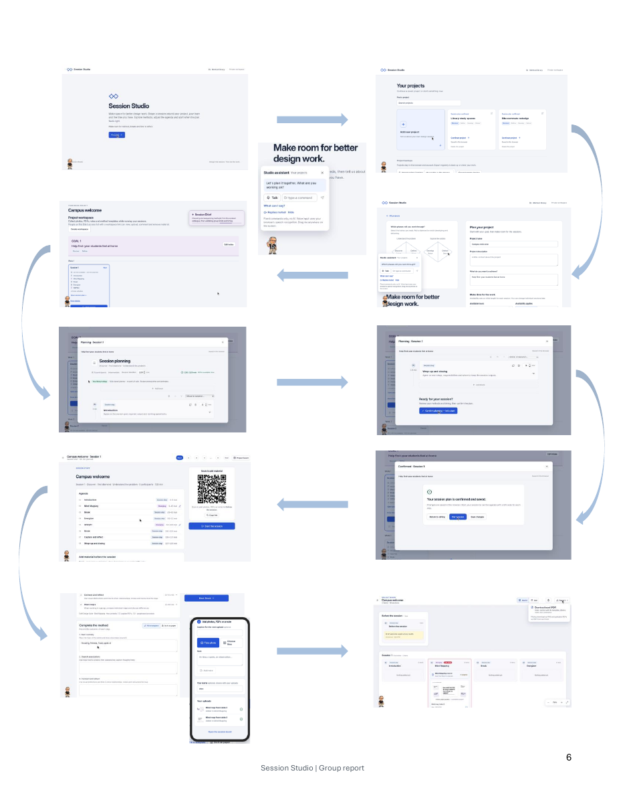
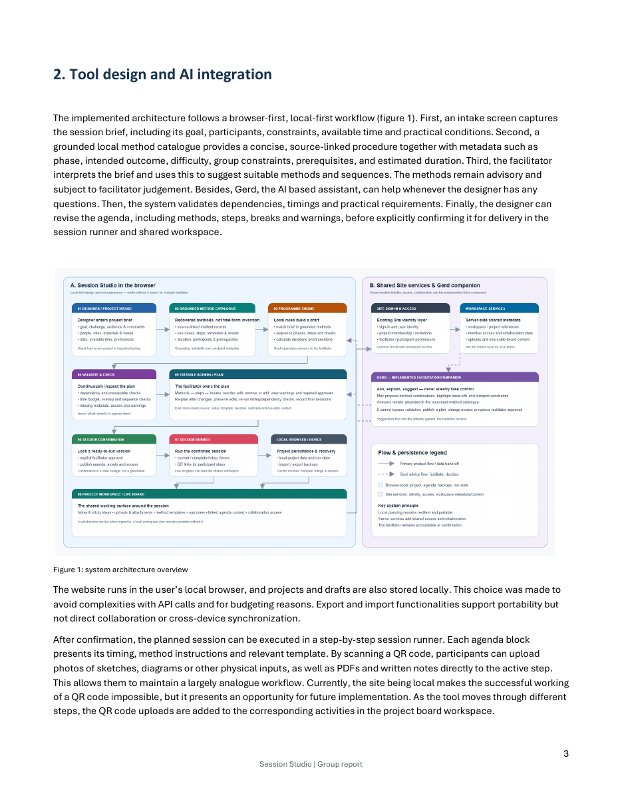

2026 · Design studio
Session
Studio.
A browser-based planning tool for turning a project brief into a practical, editable design-session plan.
Make room for
better design work.
Session Studio was developed as a group project to help designers move from a project brief to a clear session plan. It structures the practical decisions that shape a workshop: the goal, participants, available time, constraints and intended outcomes.
The focus of this portfolio case is the facilitation experience itself: helping a designer shape, review and run a session while retaining ownership over every decision.
Plan, review,
then facilitate.
The tool starts with a project setup and turns it into an editable agenda. A session runner guides the facilitator step by step, while a shared workspace brings activities, materials and participant contributions together in one place.
That makes the planning process visible and practical: a plan can be adjusted before the session begins, then used as a concrete guide while the session is running.
